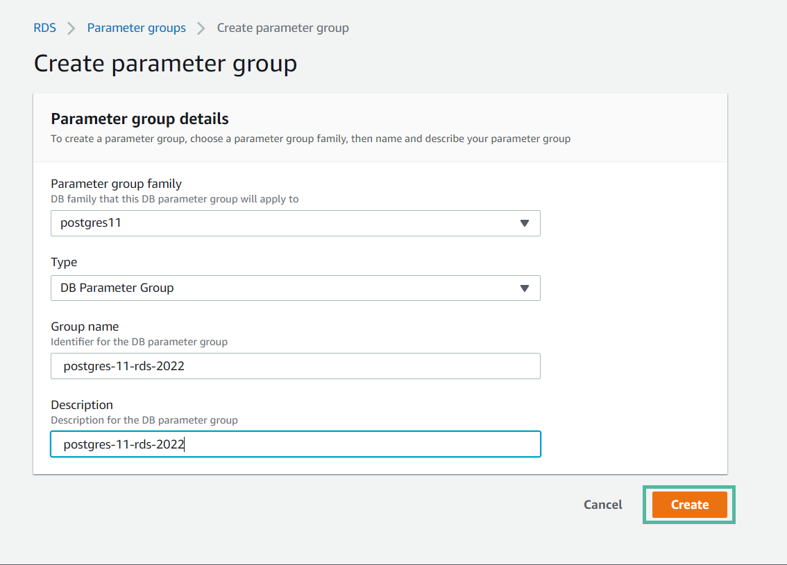
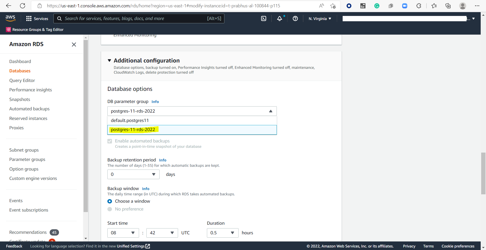
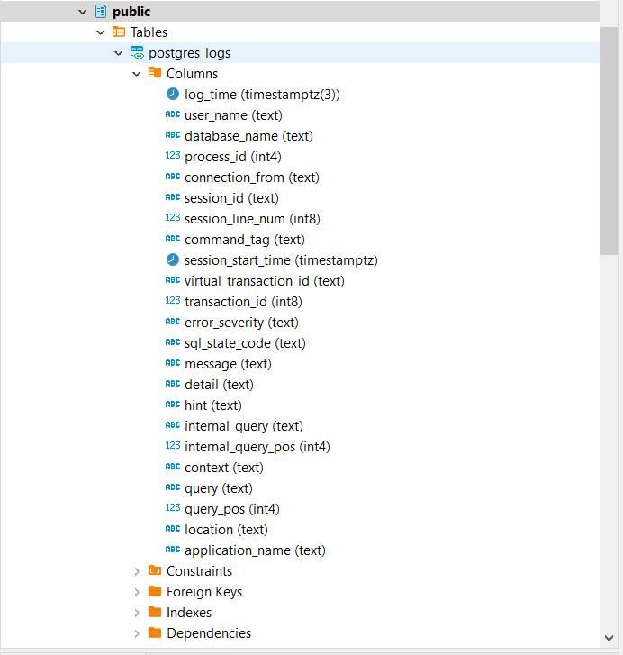

PostgreSQL Connector RDS: Query Log Ingestion¶
Before performing QLI, perform the QLI setup on PostgreSQL RDS.
Perform the following steps to configure the pre-requisites for PostgreSQL RDS QLI:
In the AWS console, go to Amazon RDS > Parameter groups > Create parameter group.
Provide the values in the following fields and click Create.
Parameter group family
Type
Group Name
Descriptions
Go to Parameter groups and select the newly created parameter group.
Click Edit parameters and update the following parameters with the values below:
Parameter
Value
log_destinationcsvloglog_filenamepostgresql.log.%Y-%m-%dlog_hostname1log_min_duration_statement0log_rotation_age1440log_statementallrds.log_retention_period4320Go to Databases > RDS Instance.
Associate the DB parameter group with the RDS instance. Click Modify > Additional Configuration > DB parameter group and select the DB parameter group.
Note
The RDS instance major version and DB parameter group instance selection version must be the same. If the version is not same, then the DB parameter group will not be listed in this dropdown.
Restart the database.
{kind=link}
{kind=link}
{kind=link}
Configure QLI in Alation¶
In Alation you must configure QLI in:
Compose (see Configuration in Compose)
- Connector Settings section of the Query Log Ingestion tab in the OCF data source Settings page
The PostgreSQL OCF connector supports the following configurations for QLI:
On the Connector Settings section, configure View-Based QLI or Custom Query-Based QLI.
Configuration in Compose¶
Prerequisite¶
To run queries in Compose, you must have the CREATE privileges on the schema you want to create the foreign table and view.
Configure QLI in Compose¶
Perform these steps to configure QLI in Compose:
Log in to Alation.
Open the catalog page of your OCF PostgreSQL data source.
Open Compose and establish a connection for the data source.
Run the following query:
CREATE EXTENSION log_fdw; CREATE SERVER log_server FOREIGN DATA WRAPPER log_fdw; CREATE OR REPLACE PROCEDURE public.p_getcurrentlog( ) LANGUAGE 'plpgsql' AS $BODY$ declare log_file_date varchar; log_file_prefix varchar := 'postgresql.log.'; log_file_suffix varchar := '.csv'; full_log_file varchar; current_log_server varchar := 'log_server'; current_log_table varchar := 'postgres_logs'; begin --Create a foreign table over the previous day's CSV log file RAISE LOG '****Starting p_getcurrentlog Procedure'; EXECUTE FORMAT('select cast(current_date AS varchar)') INTO log_file_date; RAISE LOG 'Processing log file date: %', log_file_date; EXECUTE FORMAT('select %L || %L ||%L', log_file_prefix, log_file_date, log_file_suffix) INTO full_log_file; EXECUTE FORMAT('DROP FOREIGN TABLE IF EXISTS %I CASCADE', current_log_table); EXECUTE FORMAT('SELECT create_foreign_table_for_log_file(%L, %L, %L)', current_log_table, current_log_server, full_log_file); RAISE LOG '****Ending p_getcurrentlog Procedure'; end; $BODY$;
Run the query to view the .CSV files:
SELECT * FROM list_postgres_log_files() ORDER BY 1;
Execute the query given below for procedure call.
CALL public.p_getcurrentlog();
{kind=link}
View-Based QLI¶
Create a view for Alation to retrieve query logs from.
CREATE VIEW <Schema_Name>.<View_Name> AS SELECT a.* FROM ( SELECT user_name AS userName, session_start_time AS startTime, message AS queryString, session_id AS sessionId, session_start_time AS sessionStarttime, virtual_transaction_id as transactionid, 'N' AS cancelled, database_name AS defaultDatabases FROM <FOREIGN_TABLE> ) AS a;
In <FOREIGN_TABLE>, provide the name of the foreign table in which the query logs are available. For example, the foreign table (public.postgres_log) created earlier during the QLI setup.
The CREATE VIEW statement allows you to have the latest rows from the FOREIGN TABLE.
Note
The above view applies to PostgreSQL OCF connector version 1.1.9. If you upgrade from an earlier version to version 1.1.9, create a new view using the above template or change your view with a
CREATE OR REPLACEquery using the above template.
Custom Query-Based QLI¶
If you cannot create the view for QLI, for example, due to access restrictions, you can use a custom QLI query to extract query history into Alation. If you opt for custom query-based QLI, Alation will query the system table storing query history or the table you’ve created to enable QLI every time you manually run QLI or when the QLI job runs on schedule.
For custom query-based QLI to succeed, ensure that the service account has enough permissions to select from the QLI table.
The template for the QLI query is given below. You can customize it by adding, removing, or changing the filter, but the columns and their aliases must remain as is since the connector expects this query structure.
Note
When using the QLI query template, do not substitute the STARTTIME and ENDTIME parameters in the WHERE filter. These parameters are not actual column names and should stay as is. They are expected by the connector and will be substituted with the start and end date of the QLI range selected in the user interface when QLI is run manually or on schedule.
To configure query-based QLI:
Go to the Query Log Ingestion tab of the Settings page of your OCF data source.
Under Connector Settings > Query Extraction, in the Custom QLI Query field, provide the QLI query.
Click Save.
QLI Query Template¶
SELECT user_name AS userName, session_start_time AS startTime, message AS queryString, session_id AS sessionId, session_start_time AS sessionStarttime, virtual_transaction_id as transactionid, 'N' AS cancelled, database_name AS defaultDatabases FROM <FOREIGN_TABLE> WHERE session_start_time >= TO_DATE(STARTTIME, 'YYYY-MM-DD HH24:MI:SS') AND session_start_time < TO_DATE(ENDTIME, 'YYYY-MM-DD HH24:MI:SS') ORDER BY transactionid;
In <FOREIGN_TABLE>, provide the name of the foreign table in which the query logs are available. For example, the foreign table (public.postgres_log) created earlier during the QLI setup.
Perform QLI¶
You can either perform QLI manually on demand or enable automated QLI:
To perform manual QLI, under the Automated and Manual Query Log Ingestion section of the Query Log Ingestion tab, ensure that the Enable Automated Query Log Ingestion toggle is disabled.
Note
Metadata extraction must be completed first before running QLI.
Click Preview to get a sample of the query history data to be ingested.
Click the Import button to perform QLI on demand.
To schedule QLI, enable the Enable Automated Query Log Ingestion toggle.
Set a schedule under Automated Query Log Ingestion Time by specifying values in the week, day, and time fields. The next QLI job will run on the schedule you have specified.
Note
The hourly schedule for automated QLI is not supported.